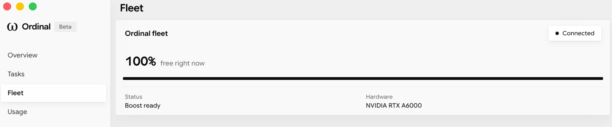
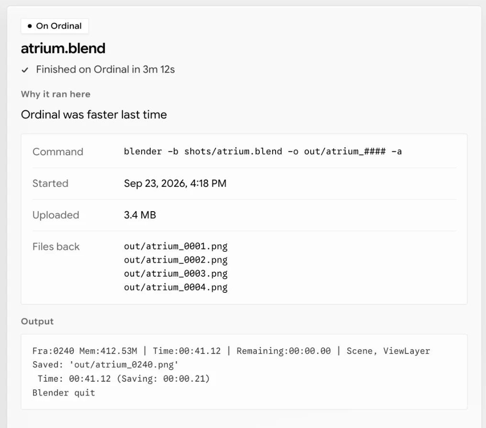

Renders, exports, builds and tests run on a GPU instead of your laptop. The results arrive in the folder you were already working in, as though your machine had made them.
Our human nature means limited mental capacity, and a limited life to spend it in. Of all the things we dream to do, the photography, the video, the development, the thoughts that wait in limbo are the ones that get forgotten. And they accumulate, until the waiting is no longer counted in minutes but in years.
Steve Jobs once made the case that a loading time one second faster, across millions of machines, saves a million seconds. At some point, that is lives. We do not say we save lives. We say we save time, and with it a large portion of what you can do with your life.
Our product is simple. You turn on one switch and the software takes it from there. It detects what needs more compute, routes it to the GPUs, and it re-arrives like nothing ever happened, in the exact same place you were working.
Boost · off
What it does
The bigger the work you do, the more of your life you get back.
Ordinal sits beside whatever you already use. We do not replace Blender, ffmpeg, or your build system, and there is nothing to rewrite. Only what changed goes up, and work we have done before comes straight back.
The app
The world's specialists should focus on what they do best. We take care of the hassle. You turn it on, and never think about pesky CLI or GPU work.


Book fifteen minutes and we will give you a demo of a job going in and out.